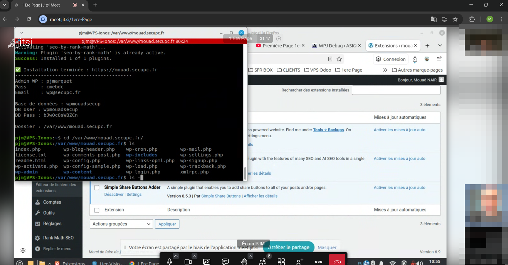
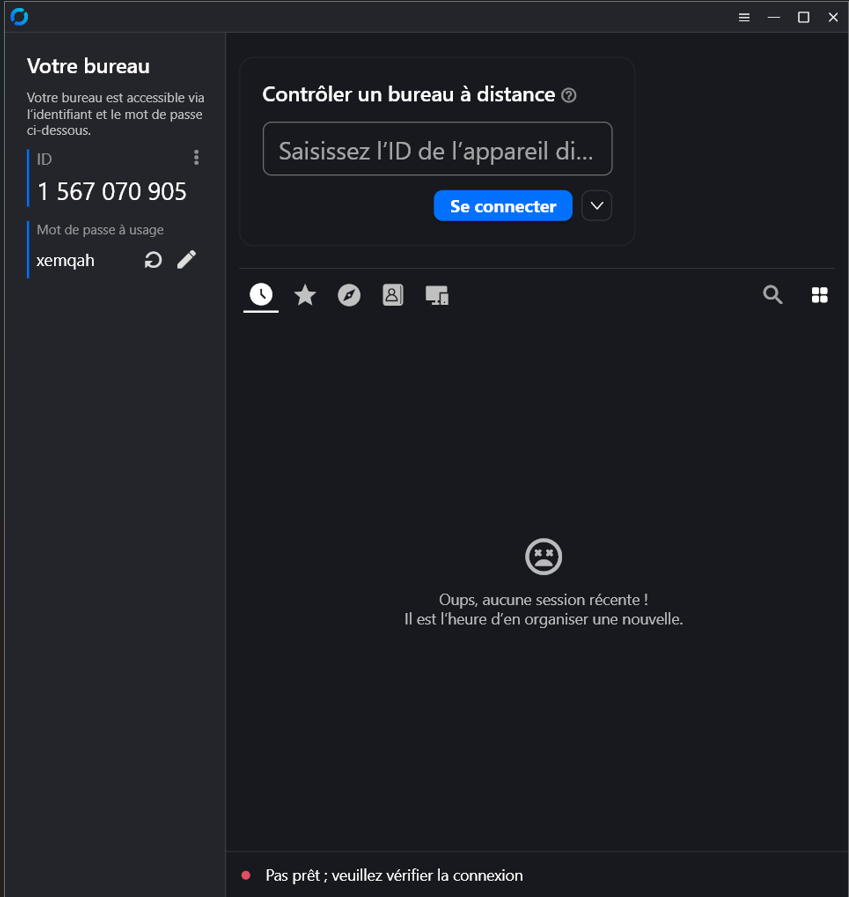
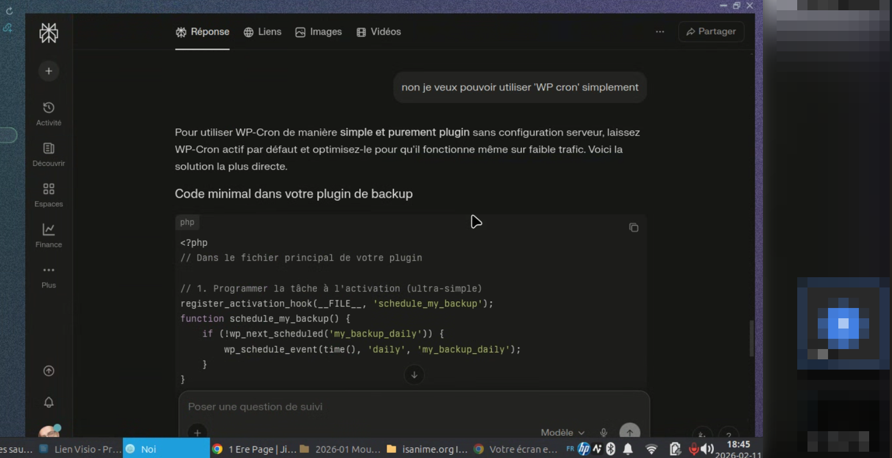
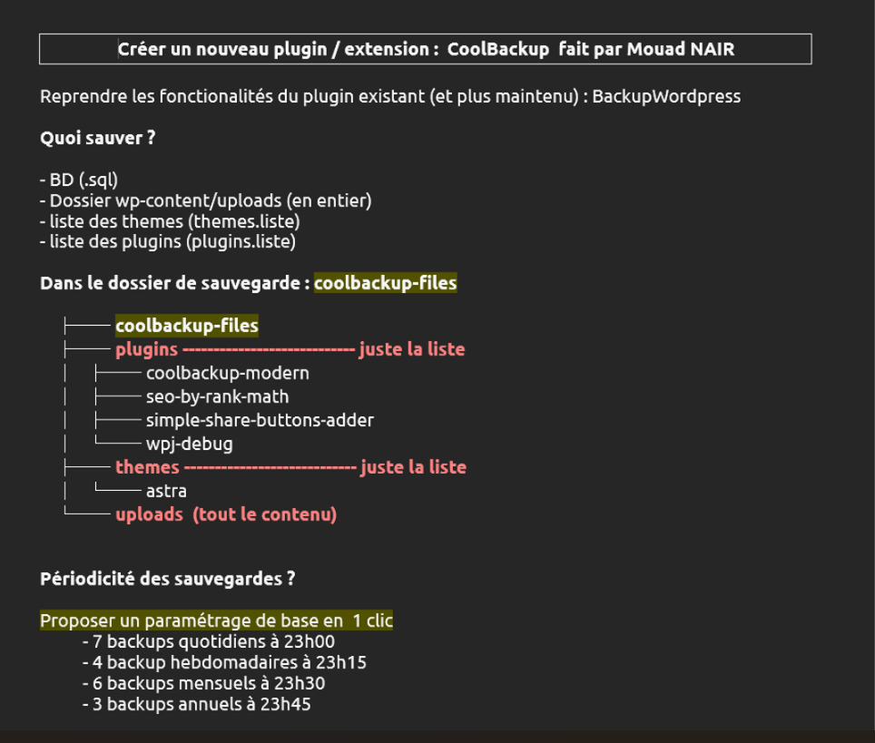

Cette page ne concerne que le mode projet. Elle montre l'organisation du travail avec mon maître de stage : visios quotidiennes, prise à distance de mon PC, explications techniques et suivi du cahier des charges.
visios quotidiennes pour faire le point sur l'avancement,
prise en main à distance de mon PC pour m'apprendre des méthodes de travail,
explication de WP-Cron pour gérer l'heure des sauvegardes automatiques,
travail à partir du cahier des charges du plugin CoolBackup8.

Visio quotidienne : suivi du projet et partage d'écran

Prise à distance : accompagnement sur mon poste

WP-Cron : explication pour planifier l'heure des sauvegardes

Cahier des charges : base du travail à réaliser
Suivi projetCahier des chargesVisio quotidiennePrise à distancePlanification WP-Cron